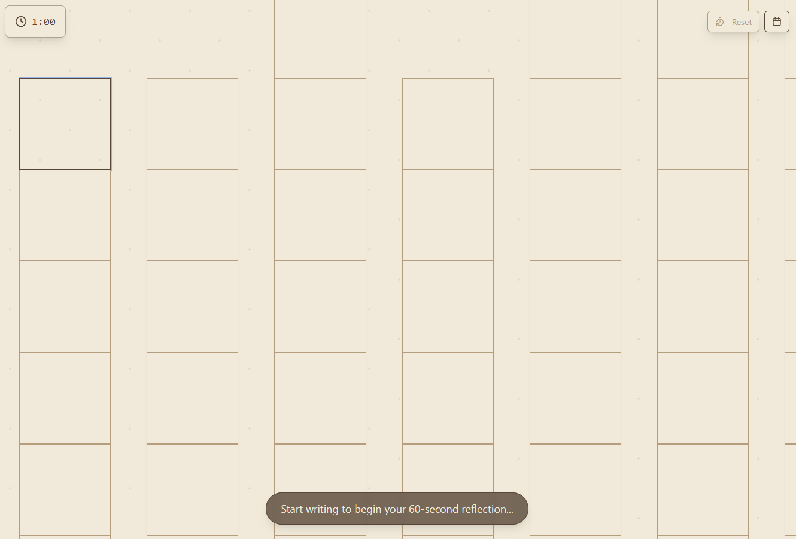
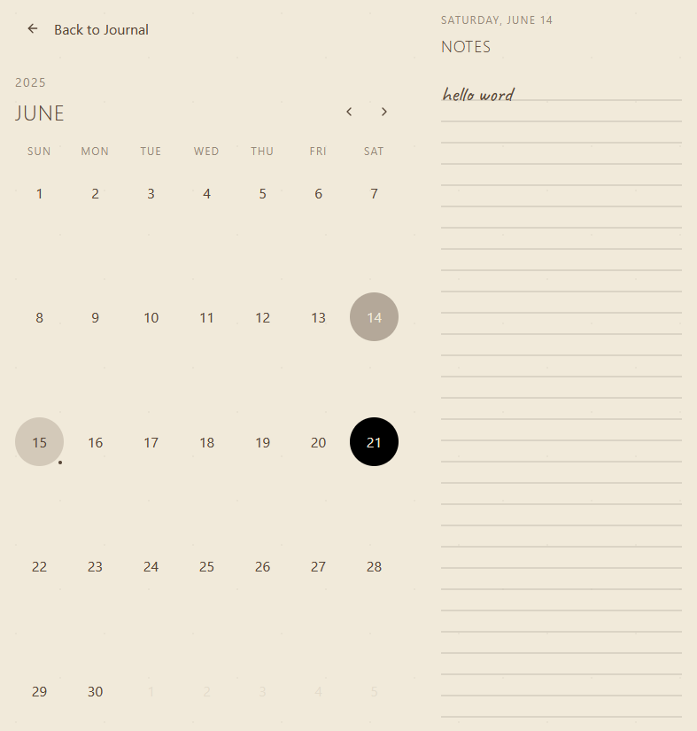

Creative: Blink and You'll Miss It
We live in an age of acceleration. Fast, fast, and faster. Trends flicker to life and vanish before we can even grasp them. Memes appear overnight, dominating conversations for mere days, then become relics before we’ve even fully appreciated their humor. In every conversation I’ve had at university, someone inevitably remarks, “This semester flew by, it feels like we just started.” It’s true; time has a strange way of slipping through our fingers.
A month and a half ago, I wrapped up my third year of college. Facing a full-time internship and juggling three demanding research projects, I decided to spend the summer at home, freeing myself from the burden of cooking and housekeeping. Yet here I am, already realizing there’s just over a month left before I return for my final semester. It’s a scary thought: in a blink, it seems, this phase of my life that I spent the majority of my childhood preparing myself for, will be over.
Amidst this relentless pace, it’s easy to lose sight of how beautiful life genuinely is, and not just in a cliché, motivational-poster kind of way. To keep myself grounded, I make sure to step away from my desk once a day, taking walks to breathe fresh air and observe the subtle changes around me. The new flowers blooming, birds darting through the sky, these reminders anchor me in the present.
When we’re inundated daily with endless streams of global news, it’s tempting to feel hopeless, caught in a narrative that the world is spiraling downward. But despite it all, the world remains profoundly good, rich with small moments worth savoring.
That’s why I created Blink. I needed a personal space to capture these transient thoughts, feelings, and observations in their raw form. In the past, I’d revisit journal entries from middle school and high school, deleting or editing moments I felt were “cringe” or insignificant. But looking back, I now realize those entries were honest reflections of my true self at the time, memories and emotions worth preserving, even if they feel awkward later.

The playlist songs I loved in middle school bring back warm, comforting memories today. Those seemingly trivial or embarrassing moments are essential parts of who I am. Blink is designed precisely to honor this truth: a minimalist, time-capsule journaling experience where entries lock permanently after 60 seconds—no edits, no deletions. It encourages authenticity, preserving the messy, beautiful, fleeting parts of life.

While I made this for myself and some friends, feel free to experience Blink for yourself, and celebrate the moments that make you uniquely you.
Enjoy Reading This Article?
Here are some more articles you might like to read next: